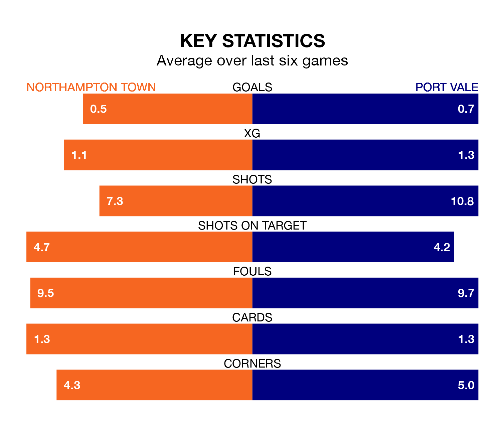

Struggling Port Vale face Northampton Town away at the Sixfields Stadium on Monday looking to build on a win in their last league outing.
After securing all three points with a 2-0 victory over Bristol Rovers on Friday, the Valiants sit 21st in EFL League One.
They travel to play a Northampton side 12th in the standings, who lost in their last match, 1-0 against Reading.
In the last 10 years, Northampton and Vale have played each other on nine occasions. Northampton won three of them, Vale four, and they drew twice.
On average, the Cobblers scored 0.9 goals and the Valiants 1.1 in those matches.
Their last meeting was on September 16, when Vale won 1-0 at home.
Northampton are in bad form in EFL League One, with one win and a draw from their last six games.
With two wins and a draw over that period, Vale's form is better – they have taken seven points from 18, compared to Town's four.
With 38 goals in 39 games so far this season, the Valiants are scoring at below the league average rate with 1.0 goals per game. And they are conceding more than average, letting in 61 goals at a rate of 1.6 per game.
The Cobblers are also below average scorers, with 1.2 goals per game, compared to a league average of 1.3. They have conceded 1.5 goals per game.
In Sam Hoskins, the hosts have one of the league's sharpest shooters so far this season. He has notched 15 goals in 34 appearances, to sit fifth in the scoring charts.
His goal rate of one every 179 minutes is quicker than that of Ben Garrity, the away team's top scorer with a goal every 261 minutes, and a total of 10 goals in 32 games.
Monday's match will be refereed by Lee Swabey, who has taken charge of 10 EFL League One games so far this season, issuing two red cards and booking 56 players. He has awarded two penalties.
He is yet to oversee a match featuring either Northampton or Vale this season.
Updated: 10:31 (UTC), 31/03/24